Project type:
Hand Anatomy Study in Mudbox.
Project description:
For this project, I conducted an anatomical study focused on the human hand. I analyzed visible muscle structures and gathered detailed reference images to guide the sculpting process. Using Mudbox, I sculpted the hand and created a labeled screenshot to visually connect key muscle groups to their corresponding forms on the model. The primary objective was to strengthen my understanding of human anatomy through 3D sculpting practice. To focus solely on anatomical accuracy and form, I began with a base hand model provided by my instructor, Liz Hejny.
Date:
March 31 - April 13 2024
Role:
3D Sculptor.
Project highlight:
Renders from different angles:
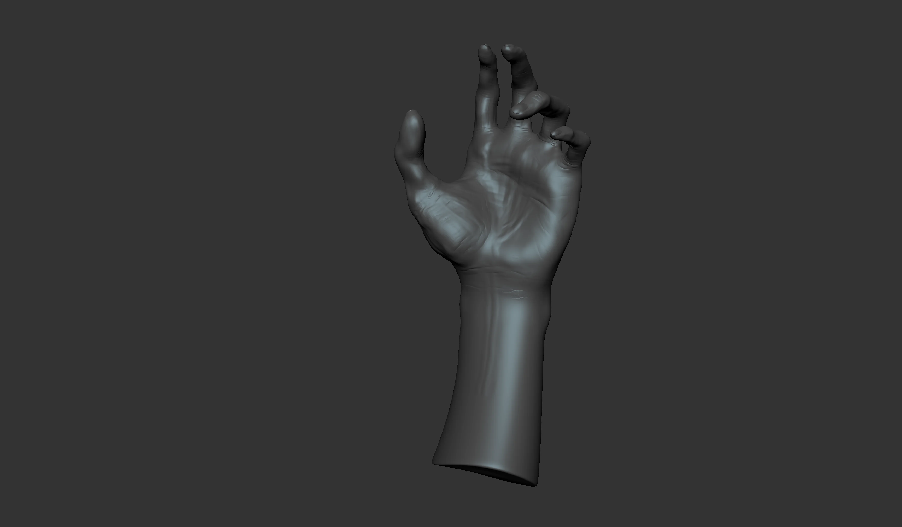
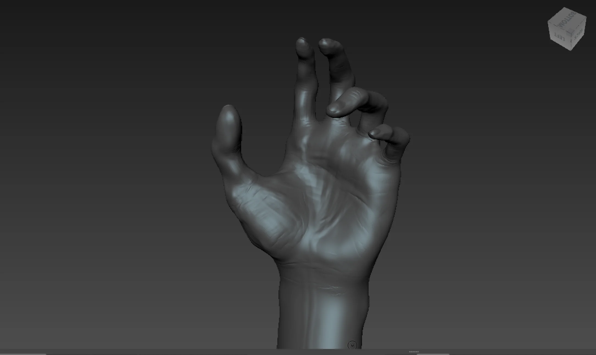
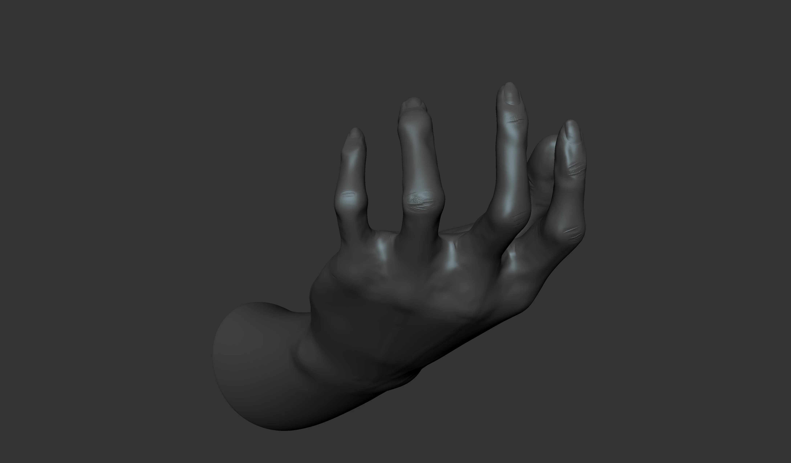
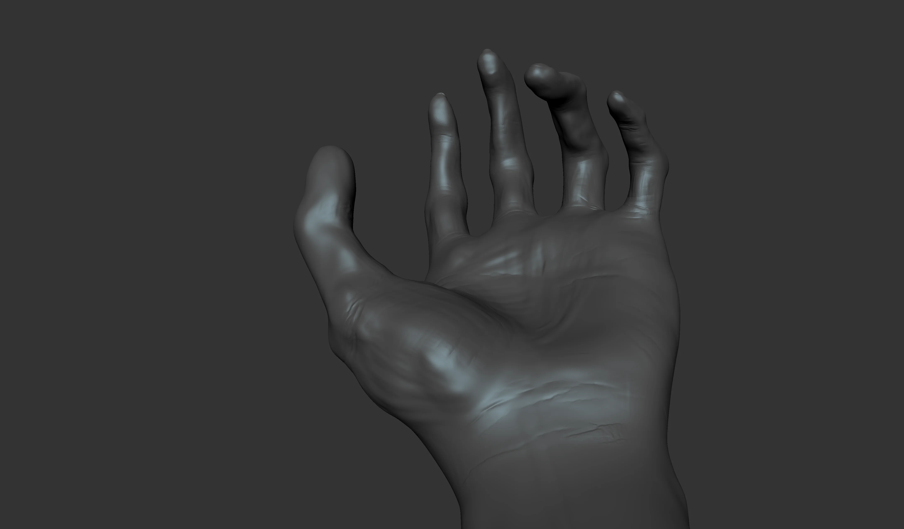
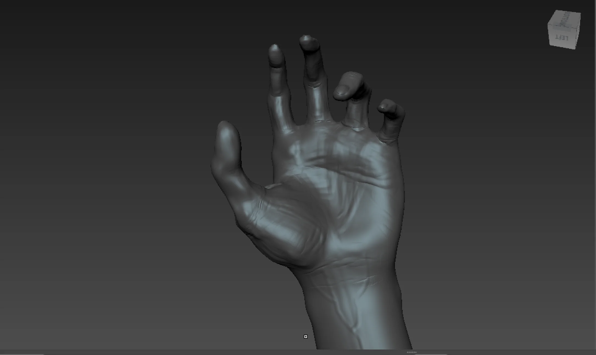
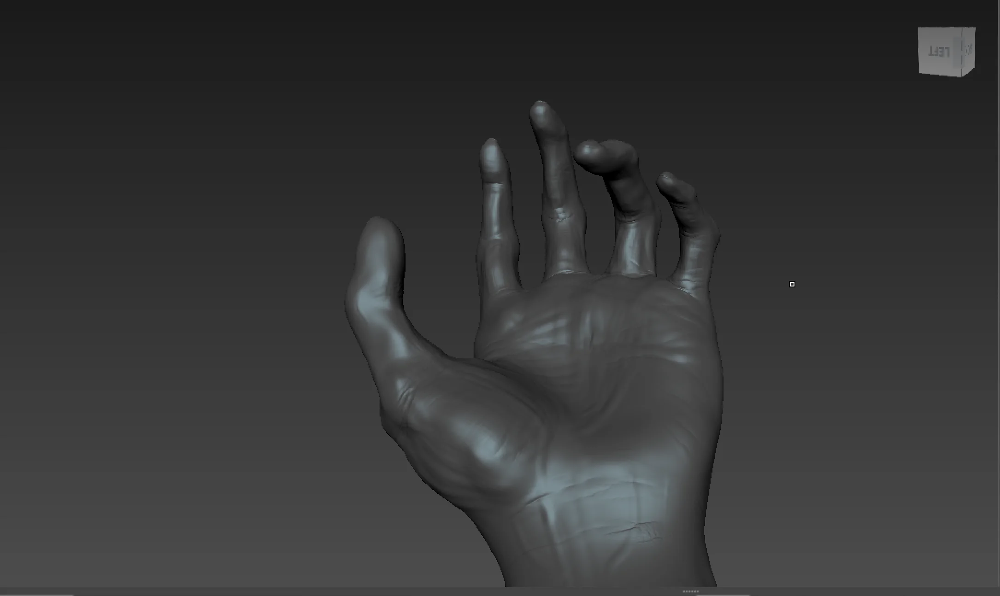
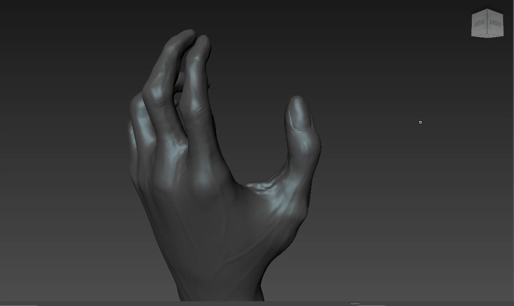
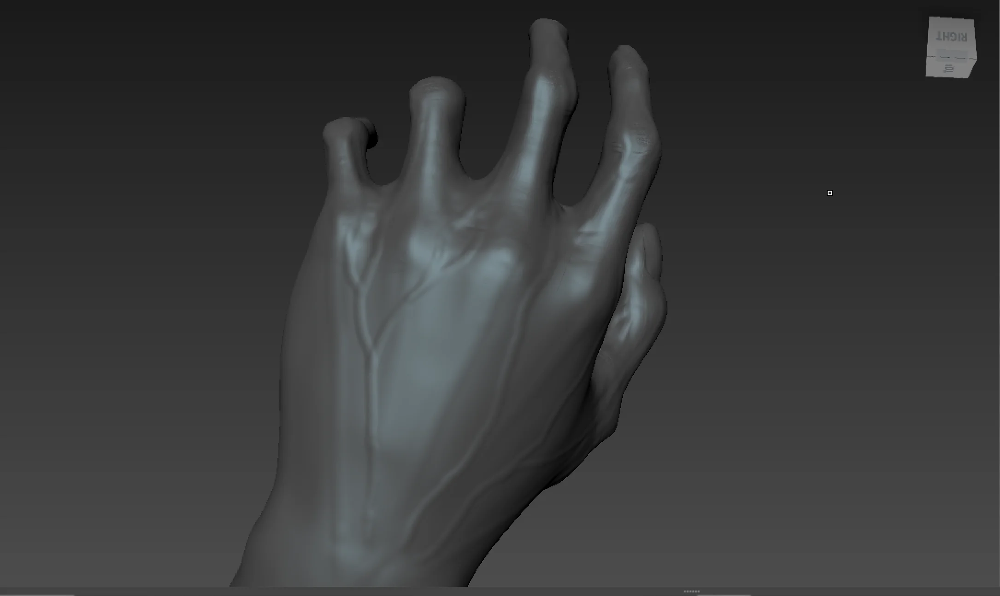
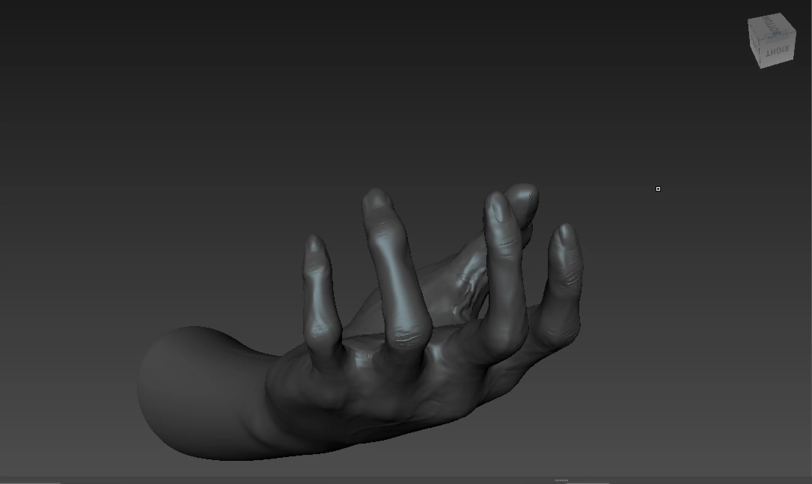
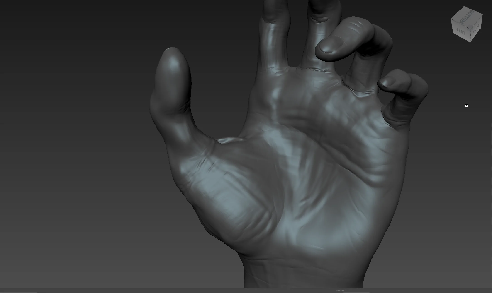
Reference:
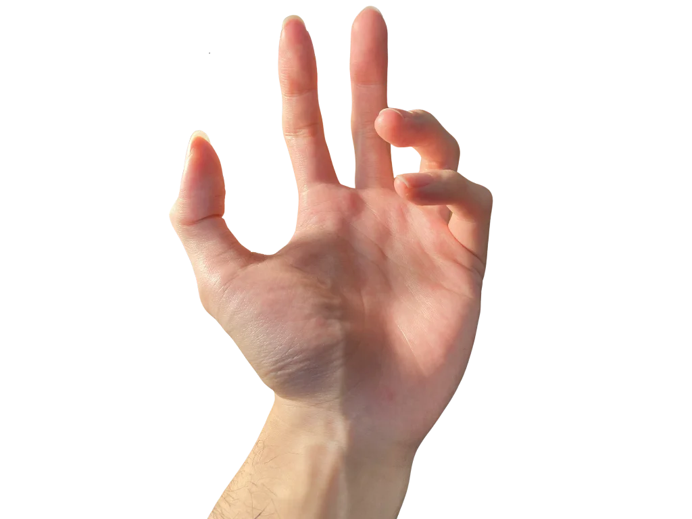
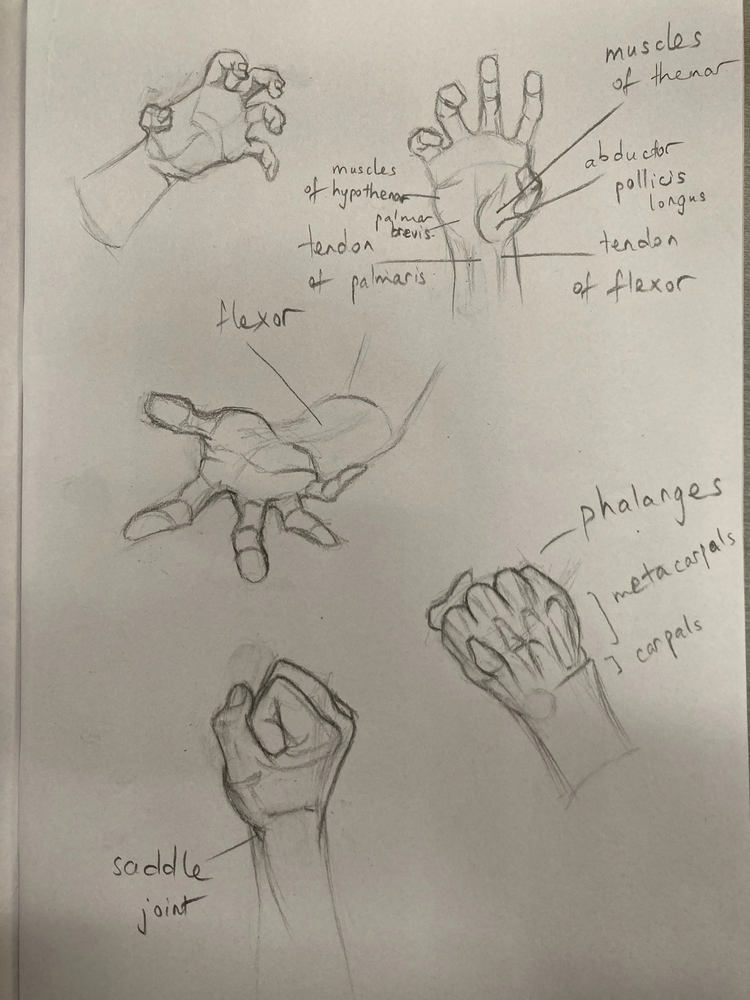
Reflection:
I thoroughly enjoyed working on this project, as it allowed me to develop my skills in sculpting realistic human hands using Mudbox. To achieve organic-looking wrinkles, I utilized high-quality wrinkle stencils VK Gamedev Digital Products on Artstation.
One of the more challenging aspects was sculpting the fingernails to appear hard and defined. I addressed this by carving out the nail edges with the Sculpt tool, then enhancing the definition using a larger Pinch tool to tighten the edges. Finally, I applied the Smooth tool to refine the surface and achieve a polished, natural look.